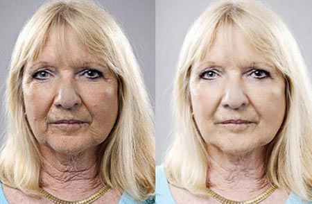
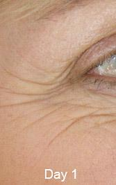
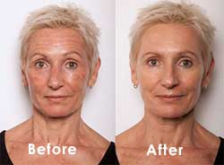

questions de femmes
Sylvie Flepp avoue son secret de coulisses pour déjouer les effets du temps et supprimer les rides.
Ci-dessous les preuves des incroyables résultats en seulement 14 jours !
Etre actrice vedette dans une énorme série à succès telle que Plus belle la vie est un rêve de tous les jours pour n’importe quelle actrice. Mais dans un milieu où l’apparence est tellement importante, être sous les projecteurs peut devenir difficile pour les femmes à mesure qu’elles vieillissent. Du haut de ses 58 ans, Sylvie est simplement la plus belle femme de la série. Mais comment fait-elle ? Beaucoup se sont demandés quel était son secret beauté pour une peau jeune : une alimentation saine, la chirurgie plastique, les liftings ou juste le parfait éclairage ?
La vérité est surprenante et bien plus simple (et moins chère !) que chacune de ces solutions. Sylvie, à l’instar de beaucoup d’autres femmes, a découvert une simple petite astuce qui retire des années de son visage, simplement et à domicile ! Après beaucoup d’insistance, elle nous a finalement avoué son petit secret.
Aujourd’hui, elle peut faire ce qu’elle aime et briller en tant que Mirta Torres dans Plus belle la vie , sans se soucier de son apparence ou du vieillissement de sa peau. Lisez la suite afin de connaître son astuce !
“Le Dr Richard Peters l’appelle « l’avancée miracle anti-âge » - parce que ça marche !”
Clémence Ballou, 53 ans, mère de trois enfants de Perpignan, A9, est le parfait exemple de comment un peu de réflexion et d’ingéniosité peuvent vous éviter de prendre des risques inutiles pour votre santé et vous économiser des milliers d’euros en factures de médecin.
Comme beaucoup de femmes, Clémence n’avait pas le budget supplémentaire pour essayer chaque « crème miracle » anti-âge approuvée par les célébrités, et encore moins pour des procédures médicales chères et électives, telles que la chirurgie plastique ou les liftings.
Avant d’essayer cette simple astuce, elle avoue avoir passé près d’une heure chaque jour pour son rituel de soin du visage contenant plus de 6 produits différents, pour des résultats très décevants. Chaque produit promettait haut et fort la réduction des rides et une peau plus jeune ; et même si Clémence suivait à la lettre les indications d’utilisation, elle ne constatait aucun résultat réel.
Frustrée et déçue, elle pensait à faire un prêt pour des injections de Botox, et envisageait même un lifting très risqué et très coûteux. Mais le prix excessif (compris entre 5000€ et plus de 20000€) et les terribles histoires d’interventions ratées, l’ont convaincue que les interventions cosmétiques n’étaient pas la solution qu’elle recherchait.
Elle était déterminée à trouver une solution anti-âge abordable et sans danger qui lui apporterait de vrais résultats sans plonger dans un énorme gouffre financier.
La solution de Clémence :
Après un an de recherche minutieuse, à parler à d’autres femmes sur leurs propres habitudes de soin, elle a découvert deux produits donnant de vrais résultats et aidant les femmes à effacer des années sur leur peau: Wrinkle Rewind et Oxygenius.
Un soir, alors que chacun de ces produits étaient faits pour être utilisés individuellement l’un de l’autre, Clémence a accidentellement fait une découverte qui pouvait révolutionner complètement le milieu des soins : elle les a
mélangés
.
Après seulement quelques jours à utiliser les deux produits ensemble lors de son rituel journalier, elle a constaté des résultats significatifs dans le miroir . Après deux semaines à utiliser Wrinkle Rewind et Oxygenius ensemble, la preuve lui sauta aux yeux : ce mélange lui offrait de vrais résultats .
En utilisant les deux produits combinés, les résultats sur Clémence étaient meilleurs que ceux que l’on pourrait constater dans certaines cliniques, pour 5000€ et plus. Cette combinaison a retiré près de 90% de ses rides et problèmes de peau, en retendant son visage et son cou, supprimant ainsi les signes d’affaissement, de vieillissement et de déshydratation de la peau. Elle a pu constater ces résultats spectaculaires en utilisant simplement des échantillons gratuits de ces deux produits, en seulement 14 jours .
Ses amis, son mari et sa famille ont tous été choqués. Ils étaient convaincus qu’elle avait secrètement fait des injections de Botox, car sa peau paraissait rajeunie de 20 ans quasiment du jour au lendemain !
Clémence fait maintenant partie des centaines de femmes qui partagent la même histoire incroyable. En utilisant cette méthode, son visage a effectivement perdu plus de 20 ans. Ca a changé sa vie et complètement estomaqué son entourage et mêmes de parfaits inconnus !
Comment ça marche ?
Grâce à ses recherches, Clémence a découvert que le véritable secret de la régénération cellulaire et le rajeunissement de la peau sont deux ingrédients clés :
- La Vitamine C
- L’Acide Hyaluronique
Il s’agit de deux ingrédients naturels qui, combinés ensemble, effacent rides et ridules au niveau cellulaire – sous l’épiderme – ce qui explique leur efficacité.
La Vitamine C est la clé pour garder une peau jeune et saine. C’est un antioxydant puissant qui ralentit le taux de dommages des radicaux-libres qui causent sécheresses, ridules et rides. Elle aide à combattre, voire même inverser, les effets du temps sur la peau, grâce au collagène, une protéine qui rend la peau pulpeuse et ferme. Appliquer de la Vitamine C sur la peau est quasiment 20 fois plus efficace que la prendre par voie orale.
Le Dr Richard Peters appelle la Vitamine C « le secret pour tromper votre âge. »
L’Acide Hyaluronique
agit en se liant à l’humidité. Il peut retenir jusqu’à 1000 fois son poids en eau, devenant un excellent repulpant naturel et aide la peau à se réparer et se régénérer après des agressions telles que la sécheresse, la pollution ou les irritations.
Les célébrités du monde entier comme Vanessa Paradis, Jennifer Aniston ou encore Cindy Crawford, ont toutes reconnu utiliser Wrinkle Rewind et Oxygenius pour conserver l’éclat de leur peau.

 Les célébrités ont parlé avec enthousiasme de
Wrinkle Rewind
et
Oxygenius.
et nous ont confié que c’était le secret pour une peau jeune et éclatante.
Les célébrités ont parlé avec enthousiasme de
Wrinkle Rewind
et
Oxygenius.
et nous ont confié que c’était le secret pour une peau jeune et éclatante.

Le Dr Richard Peters, éminent dermatologue de Beverly Hills, Californie, nous a révélé que Wrinkle Rewind et Oxygenius est le secret beauté des stars car ils contiennent les formules les plus pures et puissantes en Vitamine C et Acide Hyaluronique . Mais surtout, ces produits sont entièrement naturels, parfaitement sûrs pour chaque type de peau et n’amènent aucun effet secondaire indésirable.

"La Vitamine C et l’Acide Hyaluronique se débarrassent des couches de peau morte, tout en aidant l’épiderme à se régénérer. Nos tests montrent que vous pouvez effacer près de 20 à 30 ans de votre visage en moins de 14 jours. Mais la clé est de choisir les crèmes et sérums qui contiennent les ingrédients de la meilleure qualité possible, car ils ne sont pas tous identiques." - Dr Richard Peters
L’histoire de Clémence et les résultats de la renaissance de la peau en 14 jours:

Photos avant/après de Clémence Ballou. La photo de droite a été prise après seulement 14 jours à utiliser Wrinkle Rewind et Oxygenius.
"Comment le faire?"
"L’astuce est de mélanger Wrinkle Rewind et Oxygenius ensemble. Ces deux produits contiennent une forte concentration de Vitamine C et d’Acide Hyaluronique purs, correctement dosés. J’ai également découvert qu’ils contenaient toutes sortes d’antioxydants, du Dermaxyl (aussi appelé lifting en bouteille) et de l’Ester-C (l’actif anti-âge composé de Vitamine C). Les indications étaient simples à suivre mais très précises : il est important de les suivre à la lettre car c’est ce qui fait la différence. Après les avoir lavés et séchés, appliquez une légère couche de Wrinkle Rewind sur le visage et le cou, et tapotez doucement Oxygenius avant d’aller vous coucher. J’ai vu des résultats presque du jour au lendemain, mais après 14 jours, c’était littéralement incroyable. J’avais retrouvé le visage de mes trente ans !" - Clémence

Après le premier jour d’utilisation de Wrinkle Rewind et Oxygenius ensemble, j’étais surprise du toucher de ma peau. C’était comme si chaque pore de mon visage s’était resserré et tiré par un gigantesque aspirateur.
Je ne sais pas comment le décrire autrement ! Je sentais une sensation de chaleur et de picotements sur mes joues, autour de mes yeux et sur mon front. En me regardant dans le miroir, j’ai vu que mon visage avait un peu rougi – résultat de la revitalisation du sang sous ma peau pour renouveler mon visage. Une fois les deux produits absorbés par ma peau, mon visage paraissait plus ferme et avait un bel éclat.
Jour 1

Après 5 jours d’utilisation de Wrinkle Rewind et Oxygenius , j’étais choquée du résultat radical.
Les ridules, les points noirs, les rides avaient visiblement diminué juste devant mes yeux !
J’ai été complètement étonnée par les résultats, et je me suis sentie 20 ans plus jeune. C’était comme regarder mes rides et ridules disparaître d’un coup !
JOUR 5

Après 14 jours, non seulement mes doutes et mon scepticisme s’étaient envolés, MAIS MES RIDES AUSSI !
Les rides sur mon front, le relâchement et l’affaissement de la peau de mon cou, les pattes d’oie, et même les tâches de vieillesse, avaient COMPLETEMENT disparu. Je n’avais jamais vu ou senti un produit resserrant ma peau avec une telle force, et peu importe le prix !
Après 2 semaines, ma peau n’est pas seulement restée comme ça, mais elle est devenue aussi belle et éclatante qu’il y a 20 ans. C’est pourquoi mes amis, ma famille, étaient choqués. Ils ne pouvaient pas y croire et restaient persuadés que je mentais en prétendant ne pas avoir recours au botox !
Jour 14
Est-ce que ça marcherait pour vous ?
Il y a énormément d’astuces de soin, mais la plupart d’entre elles sont ridiculement chères. Avec autant de choix qui s’offrent à vous, il est tout à fait normal de douter des résultats alors voici mon défi : essayez le vous-même ! Faites votre propre étude et constatez les incroyables résultats dans votre miroir. Vous n’en reviendrez pas !
Une fois que vous aurez fait vous-même l’expérience, laissez-nous un commentaire ci-dessous et partagez votre histoire avec les autres, comme Clémence l’a fait avant vous. Développez les différentes étapes et prouvez au monde qu’il n’est pas nécessaire de dépenser des milliers d’euros pour PARAITRE ET SE SENTIR BELLE.
N’oubliez pas qu’il est important d’utiliser Wrinkle Rewind et Oxygenius ensemble pour de meilleurs résultats.
Pour votre confort, j’ai fourni les liens internet que Clémence a utilisés pour recevoir ses échantillons gratuits des deux produits. En vous servant de ces liens, vous trouverez les frais de livraison les plus bas. Les deux produits sont à 100% satisfaits ou remboursés. Avec des frais de transport aussi bas, vous serez en route pour une peau magnifique et jeune à moins de 5€, c’est fou ! Mais dépêchez vous, il n’y aura pas d’échantillons gratuits pour tout le monde !
avant et après
“« J’adore ma nouvelle peau et j’adore me regarder dans le miroir. J’ai essayé des douzaines de produits et de traitements mais aucun n’a marché aussi bien que
Wrinkle Rewind
et
Oxygenius
. Merci, du plus profond de mon cœur!”
- Brigitte Monfort
Nice, France
“Mon seul regret est de ne pas avoir regardé l’émission du Dr Richard Peters plus tôt ! Les résultats étaient tellement incroyables que je ne reconnaissais pas mon visage. Je parais 20 ans de moins et je me sens co
 mme une adolescente. ”
mme une adolescente. ”
- Irène Ourbe
Martinique, France

“C’est extraordinaire. Je n’en reviens pas d’avoir vu des résultats si rapidement. De vrais résultats ! Et je les ai constatés après le premier jour. Je ne vous remercierai jamais assez, j’ai retrouvé mon visage juvénile !”
- Francesca Gonzales
Paris, France
Note : Pour effacer ses rides, Clémence a utilisé Wrinkle Rewind et Oxygenius ensemble, et nous vous suggérons la même chose pour que vous obteniez les meilleurs résultats possible.
(Après cette offre incroyable ne sera plus disponible.**)
| Mise à jour : : Plus que 6 échantillons disponibles. Fin de la promotion : |
Utilisez notre " lien exclusif " pour payer juste €3.95 de frais de transport!
Fin de la promotion:
Utilisez notre " lien exclusif " pour payer juste €3.95 de frais de transport!
Fin de la promotion: